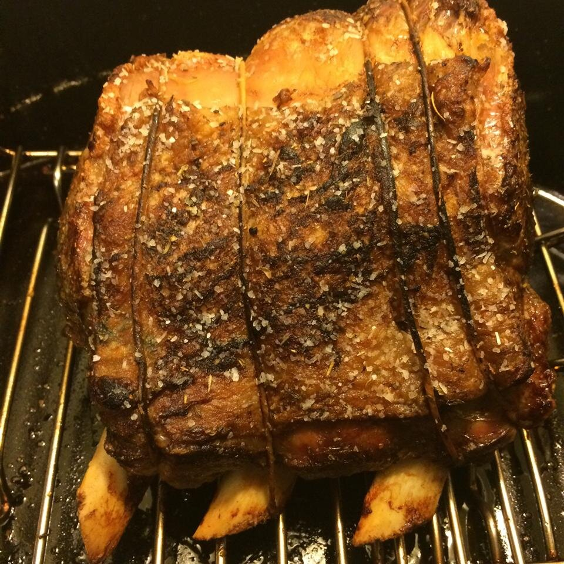

This is a specific formula for achieving a perfectly pink prime rib cooked somewhere a shade under medium rare. To use this method you must have a full-sized, modern oven with a digital temperature setting that indicates when it is preheated. Older ovens with manual controls can vary greatly, and the doors may not have the proper insulation.
Your cooking times will vary depending on the size of your prime rib roast. To calculate your cooking time, multiply the exact weight of the roast by 5. Round the resulting number to the nearest whole number. The rib is cooked at 500 degrees F for exactly that many minutes. For example, for a 6 pound roast: 6x5=30, so cooking time is 30 minutes. Turn the oven off and wait 2 hours before opening the oven door. Remove the prime rib and slice into the most perfectly medium-rare meat you've ever seen.